Preprocessing Data E. coli menggunakan KNIME#
Ini adalah tahapan preprocessing data Missing Value, Outlier Detection, dan Balancing Data menggunakan aplikasi Knime Analytics. Tahapan ini dilakukan untuk mempersiapkan data sebelum masuk ke proses pemodelan. Dengan melakukan pembersihan data dari nilai yang hilang, mendeteksi outlier, serta menyeimbangkan jumlah data antar kelas, analisis yang dihasilkan akan menjadi lebih optimal dan dapat diandalkan
Berikut data ecoli yang sudah di import ke database postgresql#
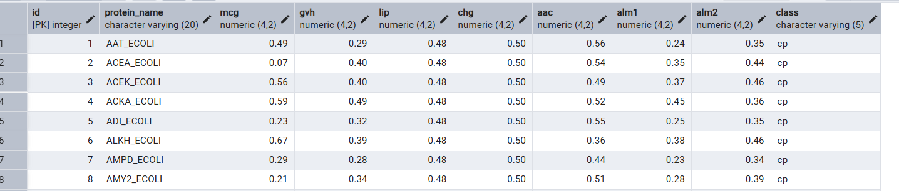
Koneksi Database Buka aplikasi Knime, kemudian cari node bernama PostgreSQL Connector, kemudian drag and drop ke bagian field di kanan. Node ini berfungsi untuk menghubungkan Knime dengan database PostgreSQL agar data dapat diakses dan diolah secara langsung. Pastikan koneksi ke server database sudah aktif sebelum melanjutkan ke tahap berikutnya.
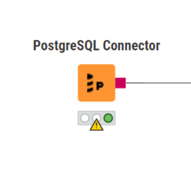
setelah itu klik dua kali bagian node nya dan setting hostname, database, username, password dll
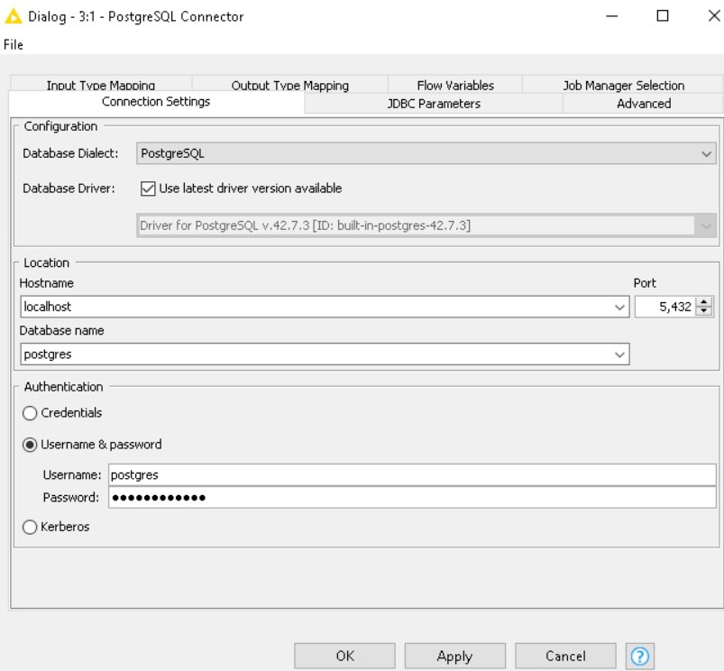
Memilih Table Setelah berhasil connect ke database PostgreSQL, langkah berikutnya adalah memilih table yang akan digunakan untuk analisis. Dalam contoh kasus ini digunakan table ecoli. Tambahkan node DB Selector ke dalam workflow, kemudian sambungkan node PostgreSQL Connector ke DB Selector menggunakan kabel koneksi. Selanjutnya, pada konfigurasi DB Selector, pilih nama tabel yang diinginkan dari daftar tabel yang tersedia di database PostgreSQL. Proses ini memastikan bahwa data yang akan diproses berasal dari sumber yang tepat.
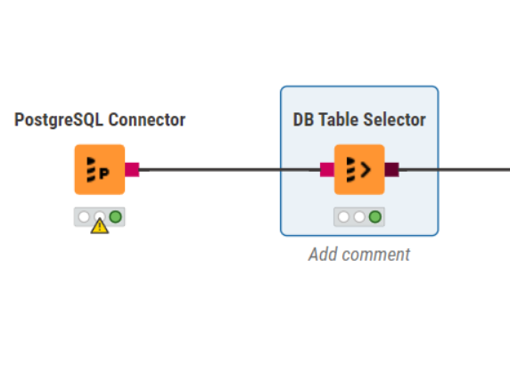
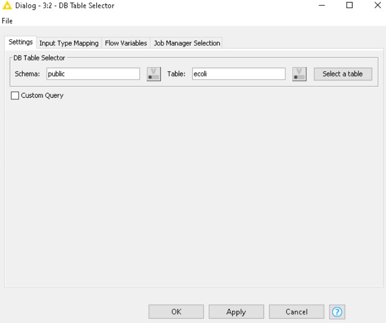
lalu kemudia kita execute
Membaca Data dari data yang kita sediakan#
tambahkan Node DB Reader untuk membaca data di table
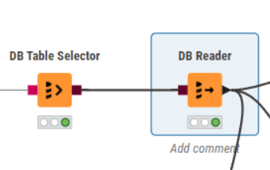
Melihat Missing Value#
Untuk menangani missing value, kita perlu mengetahui terlebih dahulu apakah ada data yang hilang atau tidak dengan menggunakan node Statistics dan memvisualkannya menggunakan node Bar Chart. Node Statistics akan menampilkan informasi ringkas seperti jumlah data kosong, nilai minimum, maksimum, dan rata-rata. Dengan bantuan Bar Chart, kita dapat melihat distribusi data secara visual sehingga lebih mudah dalam mengidentifikasi kolom mana yang memiliki nilai hilang
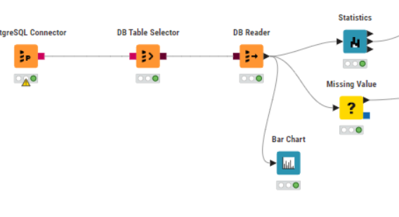
Grafik menunjukkan tidak ditemukannya Missing Value, jadi pada tahap selanjutnya tambahkan node Missing Value (Opsional). Node ini bersifat wajib digunakan hanya jika grafik menunjukkan adanya Missing Value pada data. Jika tidak terdapat nilai yang hilang, tahap ini dapat dilewati dan proses dapat dilanjutkan ke tahap berikutnya seperti deteksi outlier.
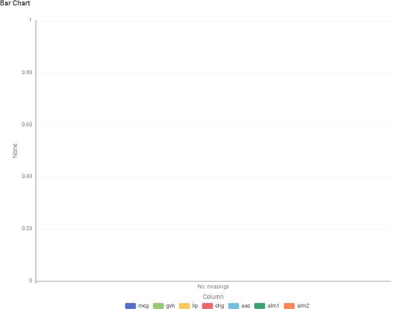
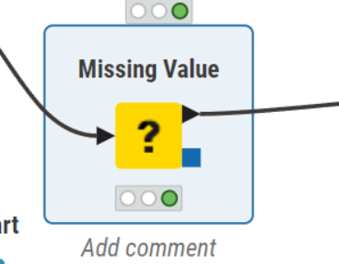
Outlier Detection Untuk mengecek dan menangani adanya outlier, gunakan node Numeric Outliers dan Bar Chart untuk visualisasi. Node Numeric Outliers akan mendeteksi nilai-nilai ekstrem yang berbeda jauh dari mayoritas data. Setelah itu, hasilnya dapat divisualisasikan menggunakan Bar Chart agar memudahkan dalam melihat sebaran data dan posisi nilai-nilai yang dianggap sebagai outlier.
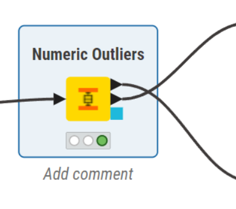
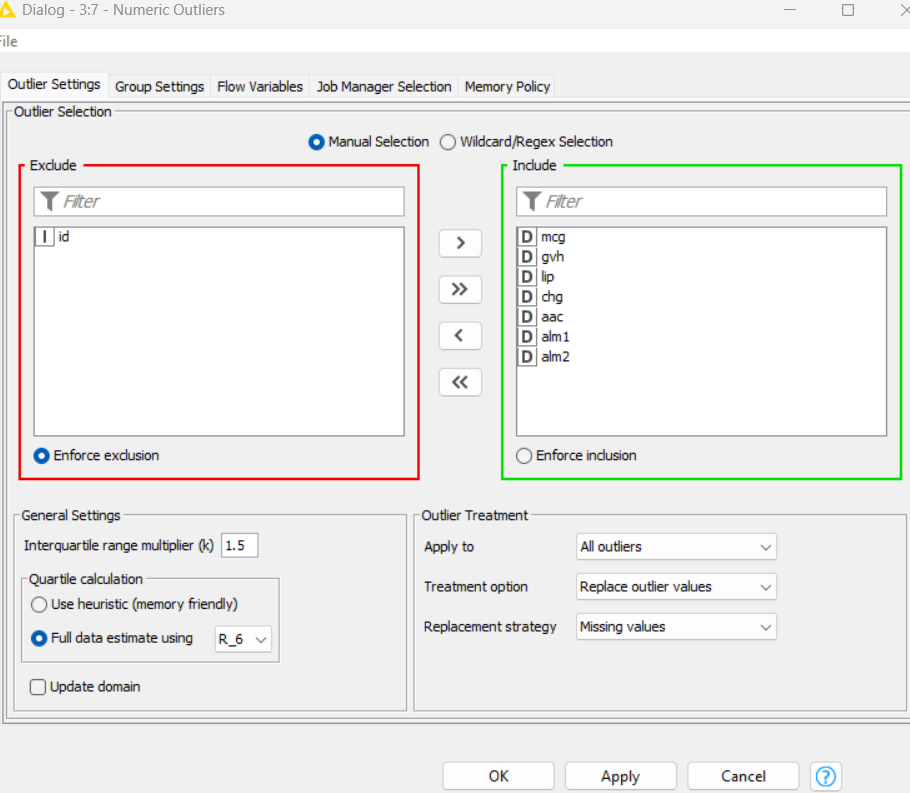
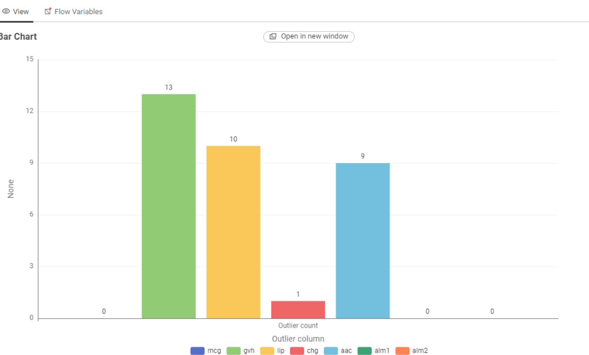
Berdasarkan grafik hasil visualisasi, terdeteksi adanya outlier pada beberapa fitur, antara lain gvh, lip, aac, dan chg. Untuk menangani hal tersebut, digunakan node Replace Outlier Values. Pada node ini, pengguna dapat melakukan konfigurasi melalui menu pengaturan untuk menentukan bagaimana nilai outlier akan diganti, misalnya dengan median, mean, atau nilai batas terdekat (capping). Langkah ini penting untuk memastikan agar data menjadi lebih stabil dan tidak memengaruhi hasil analisis atau pemodelan berikutnya
Mengatasi Data tersebut yang tidak seimbang#
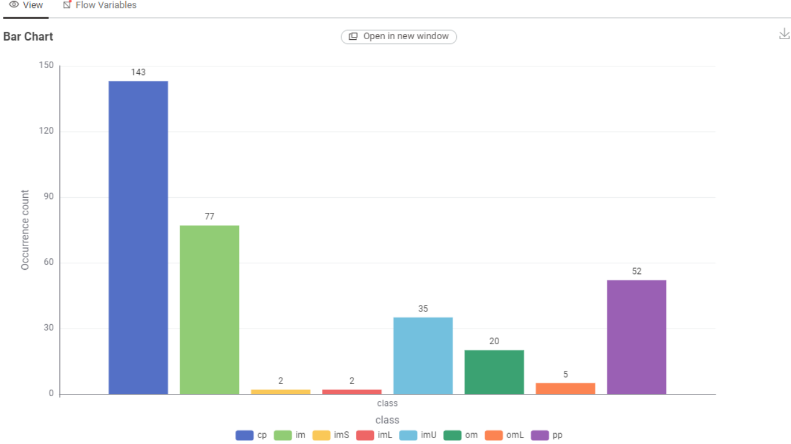
Berdasarkan grafik distribusi class tersebut, dapat dilihat bahwa data mengalami ketidakseimbangan. Untuk mengecek dan membuat data menjadi seimbang, gunakan node SMOTE. Node ini berfungsi untuk menambah data pada kelas minoritas dengan cara membuat sampel sintetis baru, sehingga distribusi antar kelas menjadi lebih proporsional dan model tidak bias terhadap kelas mayoritas.
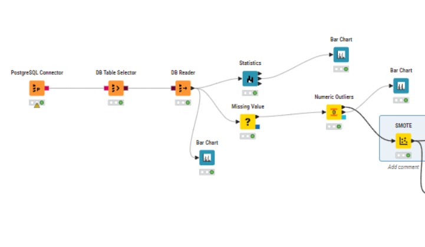
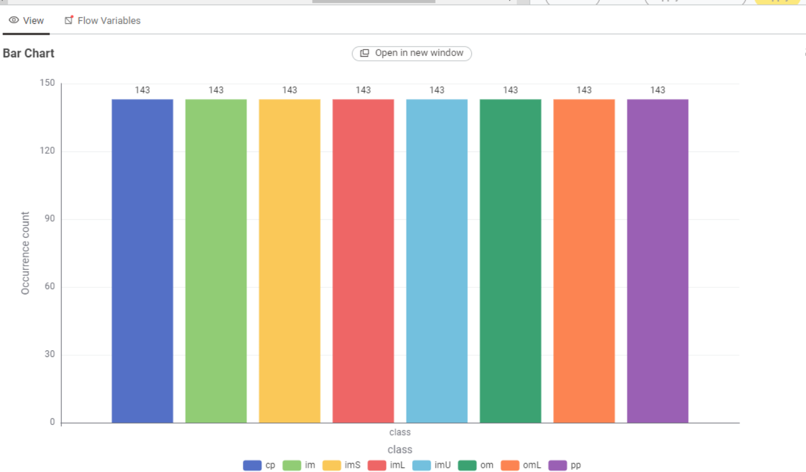
Berdasarkan grafik terbaru, dapat dilihat bahwa distribusi setiap class sudah berada dalam kondisi seimbang setelah dilakukan proses balancing data. Hal ini menandakan bahwa teknik SMOTE berhasil menambah data sintetis pada kelas minoritas sehingga jumlah data antar kelas menjadi proporsional. Dengan dataset yang seimbang, model yang akan dibangun nantinya diharapkan dapat belajar secara optimal tanpa bias terhadap salah satu kelas.